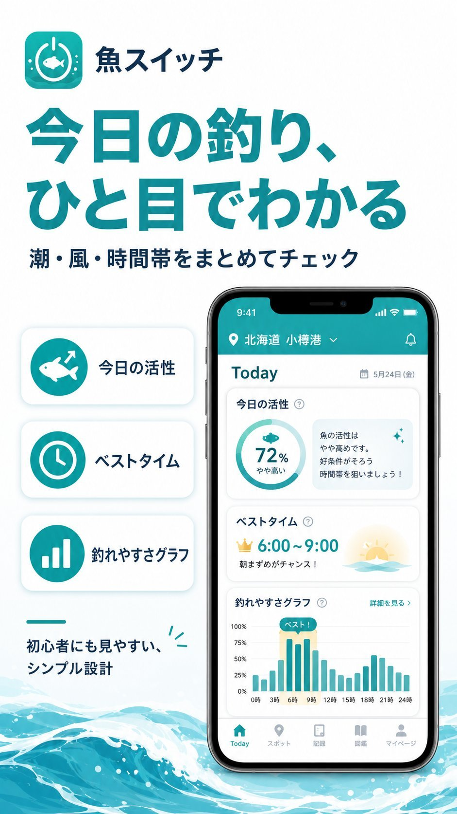

釣りの不安を減らす
ルール、天気、潮、場所選び。釣りに行く前の迷いや確認を、スマートフォンで わかりやすく整理できる体験を作っています。
Make fishing easier for everyone.
都会で疲れていた私が、地元の海と川、広い空に救われたことが発信の原点です。
ほぼ初心者から始めた釣りで、海の豊かさと「わからない」に向き合い続けてきました。
釣りをもっと楽しく、わかりやすく。海と人をつなぐものを、これからも作り続けます。

公開中
釣りアプリ 2本ルール、天気、潮、場所選び。釣りに行く前の迷いや確認を、スマートフォンで わかりやすく整理できる体験を作っています。
釣りを始めた人にも、長く楽しんでいる人にも使いやすいように。日常の釣行判断を そっと支えるアプリを育てています。
まずはiOS版を公開中。Android版も審査中で、より多くの人が同じ体験を使えるように 準備を進めています。公開でき次第このサイトでお知らせします。

iOS版公開中 / Android版近日公開
海釣りで確認しておきたいルールを、すぐに見つけやすくまとめるためのアプリです。 釣り場に向かう前の確認や、現地での判断をサポートします。




お魚エバンジェリスト・釣りアプリ開発者
東京と東南アジアで過ごした社会人生活。空は狭く、きれいな水は遠かった。
コロナ禍をきっかけに戻った地元には、歩いてすぐの海と川、広い空、毎日違う色の夕焼けがあった。 この景色を、都会で疲れている誰かに届けたい。それがコンテンツ制作を始めた理由です。
釣りはほぼ初心者からのスタート。魚介類が得意なわけでもない。それでも、水がきれいな場所で獲れたホヤを口にしたとき、脳がスパークするような旨みに出会いました。海って、こんなに豊かだったのか。
初心者だったわたしは、いつの間にか質問される側になっていました。フォロワーさんからの「何を使えばいい？」「どこで釣れる？」という声に、コンテンツで答え続けるうちに、もっと整理された形で届けたいと思うようになった。それがアプリ制作の始まりです。
釣りをもっと楽しく、わかりやすく。海と人をつなぐものを、これからも作り続けます。
釣りの記録、アプリ開発の進捗、日々の活動をそれぞれの場所で発信しています。
Android版「海の幸ルールブック」「魚スイッチ」を審査中です。
iOS版「魚スイッチ」を公開しました。
iOS版「海の幸ルールブック」を公開しました。
取材・コラボ・アプリに関するご相談は、フォームまたはInstagramのDMよりどうぞ。